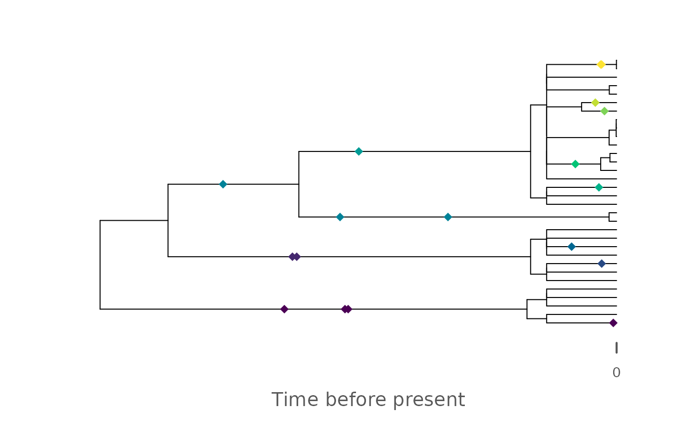

Integration with the FossilSim and paleotree packages
Source:vignettes/FossilSim_integration.Rmd
FossilSim_integration.RmdThis vignette explains the integration of admtools with
the FossilSim and paleotree packages.
Integration with the FossilSim package
admtools can transform phylogenetic trees coded as
phylo objects as well as fossils and
taxonomy objects as defined by the FossilSim
package. This allows to transform phylogenetic trees with their
associated taxonomic information and fossil locations between the time
and the stratigraphic domain.
In contrast to admtools, FossilSim uses age
(time before the present) instead of time. To successfully transform
data generated by FossilSim, this must be reversed using
rev_dir.
We give an example of this workflow
set.seed(42)
# construct age-depth model
my_adm = tp_to_adm(t = CarboCATLite_data$time_myr,
h = CarboCATLite_data$height_2_km_offshore_m,
L_unit = "m",
T_unit = "Myr")
# simulate phylogenetic tree
t = ape::rbdtree(birth = 3, death = 1, Tmax = 2)
# simulate taxonomy along the tree
s = FossilSim::sim.taxonomy(tree = t)
# simulate fossils based on taxonomy
f = FossilSim::sim.fossils.poisson(rate = 4, taxonomy = s)
# plot tree with taxonomy and fossil times
FossilSim:::plot.fossils(f, tree = t, taxonomy = s, show.taxonomy = TRUE)
## transform everything into the strat domain
t_strat = time_to_strat(t, my_adm) # no transformation of time to age required
s_strat = s |> # taxonomy object in the time domain
rev_dir(ref = max_time(my_adm)) |> # convert age to time
time_to_strat( my_adm, destructive = FALSE) |> # transform using age-depth model
rev_dir(ref = max_height(my_adm)) # transform back into age
f_strat = f |> # same here
rev_dir(ref = max_time(my_adm)) |>
time_to_strat( my_adm, destructive = TRUE)|> # destroy fossils coinciding with gaps
rev_dir(ref = max_height(my_adm))
FossilSim:::plot.fossils(f_strat, tree = t_strat, taxonomy = s_strat, show.taxonomy = TRUE)
Important point are
rev_dirmust be applied directly after data was generated and and directly before the data is further processed usingFossilSim. As a principle, userev_dirbefore data from FossilSim enters theadmtoolsandStratPalecosystem, and as it leaves the ecosystem.By default,
FossilSimplots have axis labels “Time before present”, although the trees after the transformation can be trees in the stratigraphic domain. Because of this fixed reference point used, 0 in the above plot represents the uppermost height of the section, the axis units are lengths and not times, and the “Age” is stratigraphic position below the top of the section.
Integration with paleotree
To combine the admtools package with the
paleotree package, please convert the
paleotree format into the FossilSim format as
described in the paleotree vignette of the
FossilSim vignette:
vignette("paleotree", package = "FossilSim")After conversion you can proceed as described in the section
Integration with the FossilSim package
References
- Barido-Sottani J, Pett W, O’Reilly JE, Warnock RCM. Fossilsim: An r package for simulating fossil occurrence data under mechanistic models of preservation and recovery. Methods Ecol Evol. 2019; 10: 835–840. https://doi.org/10.1111/2041-210X.13170
- Bapst, D.W. (2012), paleotree: an R package for paleontological and phylogenetic analyses of evolution. Methods in Ecology and Evolution, 3: 803-807. https://doi.org/10.1111/j.2041-210X.2012.00223.x
- Warnock R, Barido-Sottani J, Pett W, Joseph O, Stolz U (2024). FossilSim: Simulation and Plots for Fossil and Taxonomy Data. R package version 2.4.1, https://CRAN.R-project.org/package=FossilSim